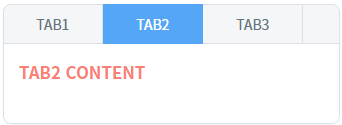
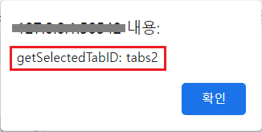
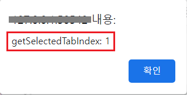
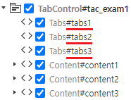

TabControl의 'getSelectedTabID' 메소드와 'getSelectedTabIndex' 메소드를 사용하여 선택된 탭의 아이디와 인덱스를 반환받는 예제입니다.
다음은 예제에서 사용한 메소드와 설명입니다.
getSelectedTabID: 선택된 탭의 ID를 반환합니다.
getSelectedTabIndex: 선택된 탭의 Index를 반환합니다.
선택된 탭의 ID 반환받기
선택된 탭의 Index 반환받기
1
STEP 1: 초기 상태를 확인합니다.
TabControl의 두 번째 탭이 선택된 상태입니다.
Image 1.브라우저(Chrome) 실행 예시

2
STEP 2: 선택된 탭의 ID를 확인합니다.
'선택된 탭의 ID 반환받기' 버튼을 클릭합니다.3
STEP 3: 실행된 결과를 확인합니다.
선택된 탭의 ID가 브라우저 alert으로 출력됩니다. 출력 값 : 'getSelectedTabID: tabs2'
Image 2.브라우저(Chrome) 실행 예시

1
STEP 1: 초기 상태를 확인합니다.
TabControl의 두 번째 탭이 선택된 상태입니다.
Image 3.브라우저(Chrome) 실행 예시
2
STEP 2: 선택된 탭의 Index를 확인합니다.
'선택된 탭의 Index 반환받기' 버튼을 클릭합니다.3
STEP 3: 실행된 결과를 확인합니다.
선택된 탭의 Index가 브라우저 alert으로 출력됩니다. 출력 값 : 'getSelectedTabIndex: 1'
Image 4.브라우저(Chrome) 실행 예시

TabControl의 'getSelectedTabID' 메소드를 사용하여 스크립트를 작성합니다. 세부 설정은 아래의 스크립트 예시에 작성되어 있습니다.
Example 1.Script
//예제 파일에서는 스크립트 scwin.btn_exam1_1_onclick에 작성되어 있습니다. // TabControl 'tac_exam1'의 선택된 탭의 ID를 반환받습니다. var result = tac_exam1.getSelectedTabID(); // 반환 값 예시) 'tabs2'
반환되는 TabControl의 탭의 ID 값은 'addTab' 메소드의 첫 번째 인자에 할당한 값 또는 하드 코딩으로 구성한 탭의 ID입니다.
Image 5.웹스퀘어 스튜디오의 '디자인' 탭 - 컴포넌트 뷰 예시

TabControl의 'getSelectedTabIndex' 메소드를 사용하여 스크립트를 작성합니다. 세부 설정은 아래의 스크립트 예시에 작성되어 있습니다.
Example 2.Script
//예제 파일에서는 스크립트 scwin.btn_exam1_2_onclick에 작성되어 있습니다. // TabControl 'tac_exam1'의 선택된 탭의 Index를 반환받습니다. var result = tac_exam1.getSelectedTabIndex(); // 반환 값 예시) 1
getSelectedTabID( )
getSelectedTabIndex( )